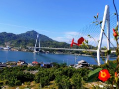

|
朝、ホテルのロビーで友人と合流。
駅前のレンタルサイクルは外国人を中心に長い行列ができていて盛況で、事前に予約が取れなかったのも納得。
我々は小舟で渡った隣の島で予約していたので、そこで借りてしまなみ海道へ。今治まで 80km。
島から島へ爽快にひた走る。すばらしいコースだった。
大きな橋がわりと高所にあるため、橋のたびに 50～100m くらい登る必要がある。
友人は今年 100km マラソンを完走した非標準型ヒューマンなので無限の体力だが、自分にはなかなかきつかった。
軽快に抜かしていく電動アシスト付き自転車を恨めしげに眺める。
予定より早く今治に到着。地元のアットホームな居酒屋で語らい。
| しまなみ海道 - 橋への登り坂から |
 |
|